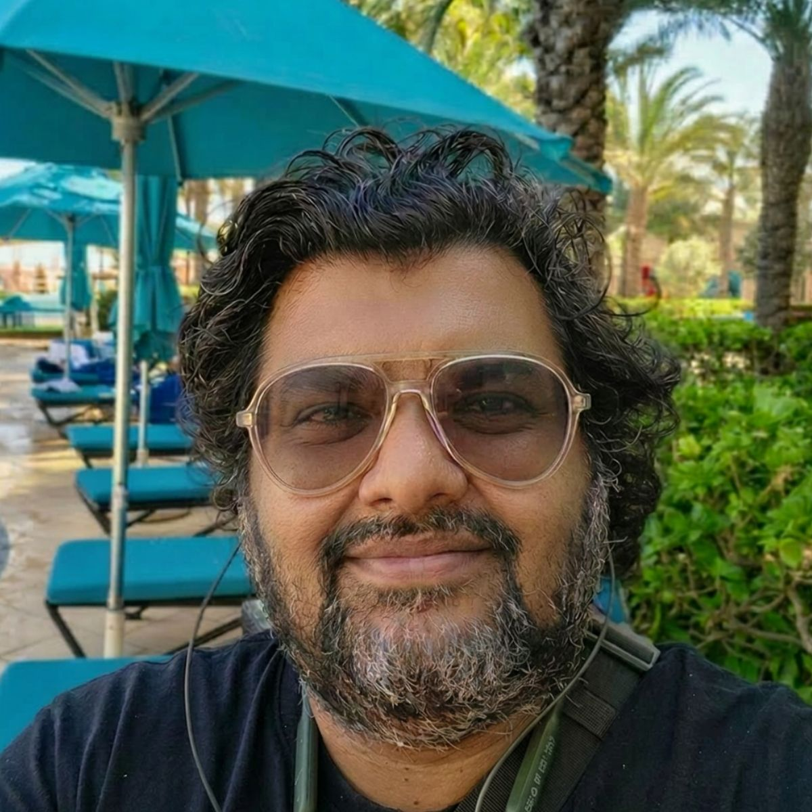

hello!
I'm a content and brand strategist helping companies stand out with storytelling that resonates.
I've led teams, shaped editorial strategy, and grown audience and pipeline for companies ranging from digital agencies to fast-moving B2B SaaS startups.
I started my career in a television newsroom, which is actually a great place to start for a content strategist. Because newsrooms are brutal. They teach you the value of clarity and a healthy respect for deadlines. After 5 years in news media, I switched to brand marketing and for the last 15 years, I have been helping brands sharpen their story and stand out in an increasingly crowded market.
I've led teams, built content functions, managed agencies, onboarded clients, pitched strategies, ghostwritten for CEOs, produced podcasts, and at various points done all of the above simultaneously with too few people and not enough time.
For the past five years I've been deep in B2B SaaS, helping companies reach audiences where they are with language they understand. With a customer-first approach to brand-building I've also been using AI to build workflow tools that solve real production problems.
ABM Content · AI Workflows
The Challenge
JustCall's ABM strategy required deep, industry-specific content targeting segments like dental clinics and real estate agencies. The expectation was one landing page a week across multiple simultaneous campaigns, with just me on point.
The Solution
Given an industry name, I researched the landscape, competitor marketing, customer pain points, and industry language, then produced a core research document used across sales, performance marketing, and content teams.
I built a Claude skill to generate a structured research document from an industry name, and a second to produce the landing page first draft. I reviewed and rewrote every output for brand voice, industry jargon, and insider references.
For stakeholder questions, I built a lightweight AI knowledge tool so anyone could query my research without coming to me directly.
The Outcome
Audio & Visual · CRM · Data
The Challenge
I owned JustCall's podcast and webinar program with no in-house audio or video support. Promotion meant blasting the entire database, causing unsubscribes. The root problem was data quality: over 6,000 unique designations with no consistency, making targeted outreach impossible.
The Solution
I managed three external vendors and used Riverside for quick edits to avoid back-and-forth delays. I built a Claude skill that turned episode transcripts into clips, blog drafts, and social posts.
For the database, I used AI to bucket 6,000+ designations into around 100 standardised categories, created a new HubSpot field, and repeated the process for company industry.
The Outcome
Brand Voice · Thought Leadership · SEO
The Challenge
Wingman knew exactly what they wanted: a voice that was irreverent, human, and impossible to ignore in a market full of dry B2B content. The CEO's thesis was that a differentiated voice could outpunch bigger budgets. The problem was that only the content director could write in it reliably, making it impossible to scale.
The Solution
I internalized the voice, fleshed it out, and added to it, making it possible to produce content at volume without sacrificing what made it distinctive. I ran the full thought leadership pipeline: topic identification from customer interviews, research reports, and trending headlines, a weekly publishing cadence, lead magnets built for conversion, and ghostwriting for founders and executives in publications including Saleshacker (now GTMnow).
The Outcome
When Wingman was acquired by Clari, I was specifically asked to keep writing in the Wingman voice. The blog was ported to Clari, and I began producing content for Clari as well.
Social Strategy · Video · Storytelling
The Challenge
Humantic.ai was an early-stage startup with fewer than 20 people and a two-person marketing team. I was brought in to build the content and social function from scratch, largely solo, with a LinkedIn presence of around 7,000 followers and no consistent publishing cadence.
The Solution
I anchored the strategy around customer voice. The CEO facilitated introductions to customers, and I ran conversational video interviews that became the backbone of our social content: clips, carousels, and blog posts built around real customer stories. The thesis was that trust, not reach, would drive growth at this stage.
I handled everything end to end: interviews, video editing, design elements, social content, and blog writing. For the product explainer video, I wrote the script and collaborated with a vendor on the creative and visual direction.
The Outcome
Agency Leadership · Multi-market · Client Strategy
The Challenge
Web Spiders was a small digital agency serving clients across Singapore, Malaysia, India, the UK, and the US. When I joined as a Senior Content Writer, it was primarily an SEO content shop. Over the next decade, the agency pivoted almost entirely to social media and then to full-service digital marketing, and the demands on me grew with it.
The Solution
I stepped into a project lead role early after an internal crisis and never really stepped back. By my final four years, I was involved in every stage of the client lifecycle: pitching, onboarding, structuring deliverables, and staying personally involved until trust was established. Every team in the agency eventually reported to me.
The clearest example was Singapore Polytechnic PACE. They came in as a basic social media client and over four years grew into a full 360-degree engagement covering social, SEO, performance marketing, and content. Contract value grew roughly 30% each year. I had four full-time team members and a Singapore-based resource reporting to me, and we ran video shoots remotely from India.
The Outcome
Selected pieces from across the case studies above. These are here as supporting evidence: to show the range of formats I work across and the quality of what gets shipped.
Anirban is one of the most creative writers I've ever worked with. He's an idea machine, dedicated to his craft, and a fantastic teammate. If you want truly outside of the box thinking, Anirban is your guy.
Anirban joined Wingman's content team when we were scaling it from a 1-woman army to a brand machine. He brought so much energy, creativity and humor to work that he bowled all of us over.
He brings creativity, originality and emotion to any writing project. He can write for B2B, B2C and everything in between with ease and élan. He's highly skilled as a content strategist and brings his analytical skills to the table.
Anirban has a rare combination of creativity and attention to detail. He is a quick study and this is a big help in the projects we have completed together.